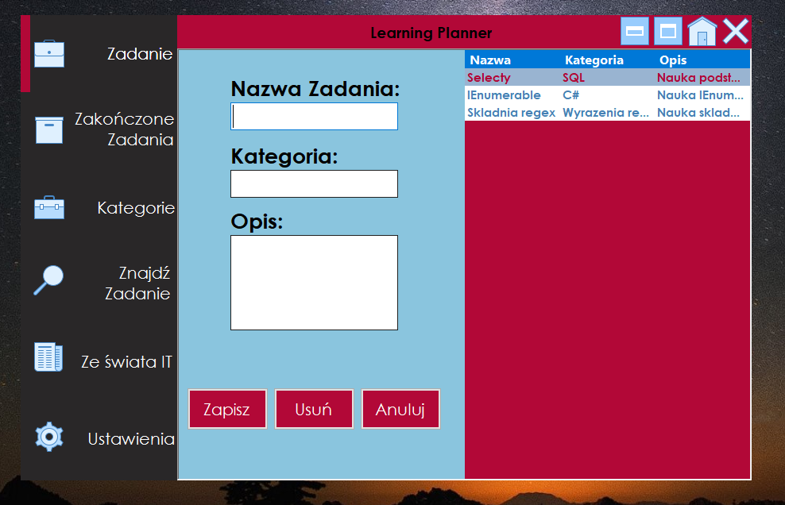
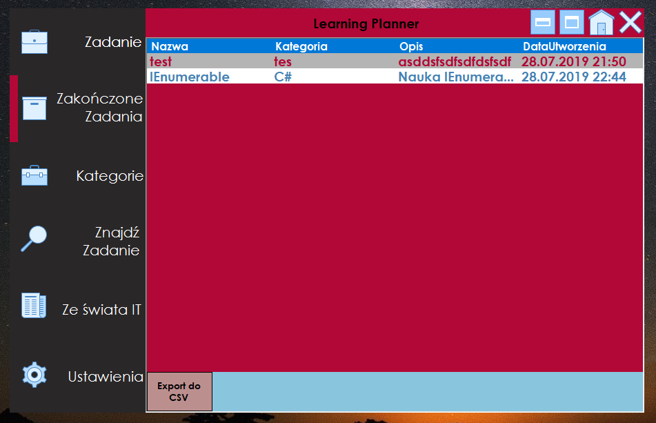
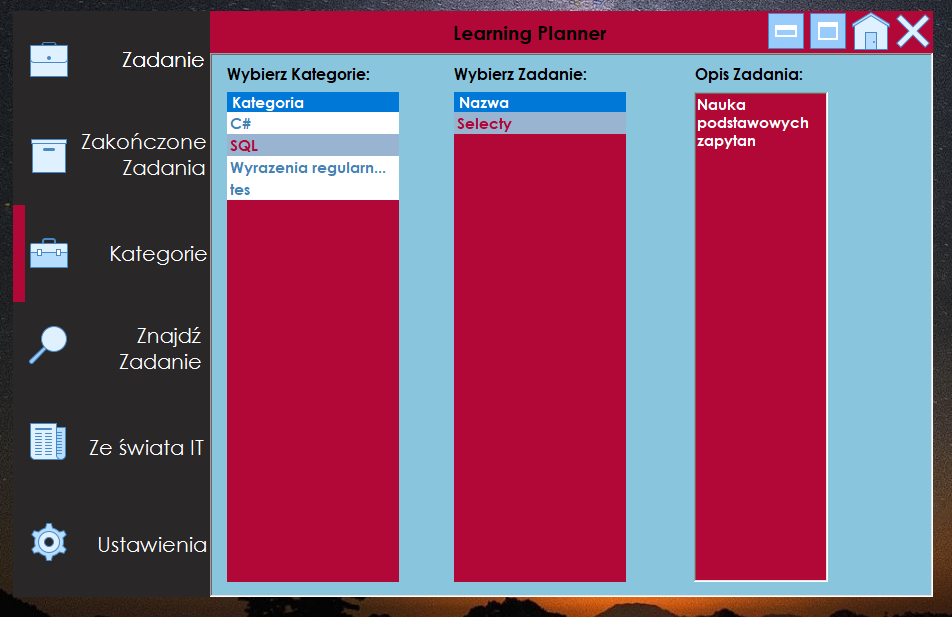

It is a desktop application connected to database. Technologies used in
project: C#, Windows Forms, Entity Framework, LINQ, GDI, MS SQL, Azure
Usage: After running program you will see motivational quotation randomly selected from database. Next You
have to register account for using aplication. After registered account you can log in to the app and use it
;) Inside application you will see 6 submenus on the left side:
-
Tasks(Zadania) - Here you can create, read, update and delete tasks. Each task contains
"Name,category,
description, status, creation time". Also you can double click into any task and see details of
clicked
task
and there is a button "End task (zakoncz zadanie) which moving task from this submenu to Completed
Tasks
(Zakonczone zadania) submenu.
-
Completed Tasks (Zakonczone zadania) - Here you can see all Completed tasks moved from Tasks
submenu.
Also
you can export all finished tasks to .CSV file. Here you can also double click each task to see
details
and
you can modify description after clicking "Edit (Edytuj).
-
Category (Kategorie) - Here you can sort tasks by category and see description of each task.
-
Find Task (Znajdz Zadanie) - Here you can find all tasks by filtering them with selected criteria.
-
From IT World (Ze swiata IT) - Here you load RSS Channel to RSS Reader by click one and press
"ADD(dodaj)"
or you can type any RSS channel link manually. Lower you select web site or you can type any link
also
manually and press button "Load site (zaladuj strone) to see website.
-
Settings(Ustawienia) - In right corner you can change color of background application. The color
change
is
set using 3 trackbars RGB. To save color changes you have to press "SAVE(zapisz). Lower you have
sounds
and
you can select track (calm, classic , relax). On the left of music you will see font change settings
which
allows you select font. One the left of font settings you will see 3 buttons.
-
Default settings(ustawienia domyslne) - Pressing change all application settings to default values.
-
Report an error(zgłoś błąd) - Here you can report error or write message to application
administrator.
Important here is to fill correct email addres to receive response from administrator.
-
About authors(O autorach) - Here you can see a simple messagebox with authors Names, Surnames and
emails.
Images


